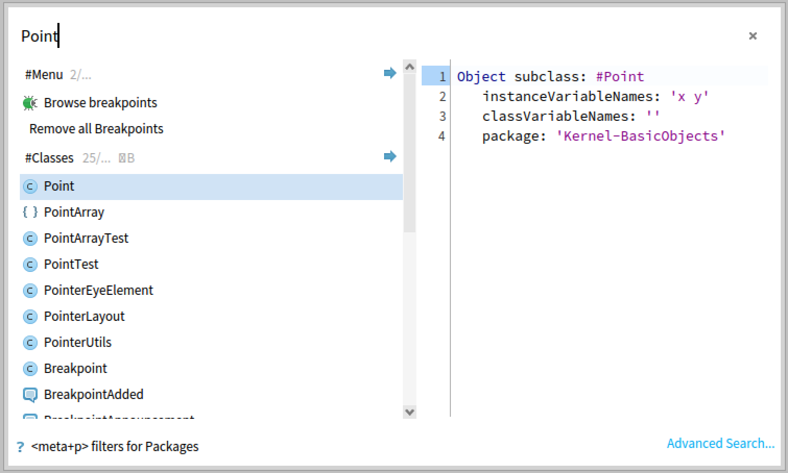
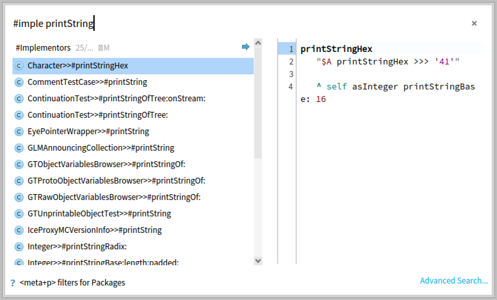
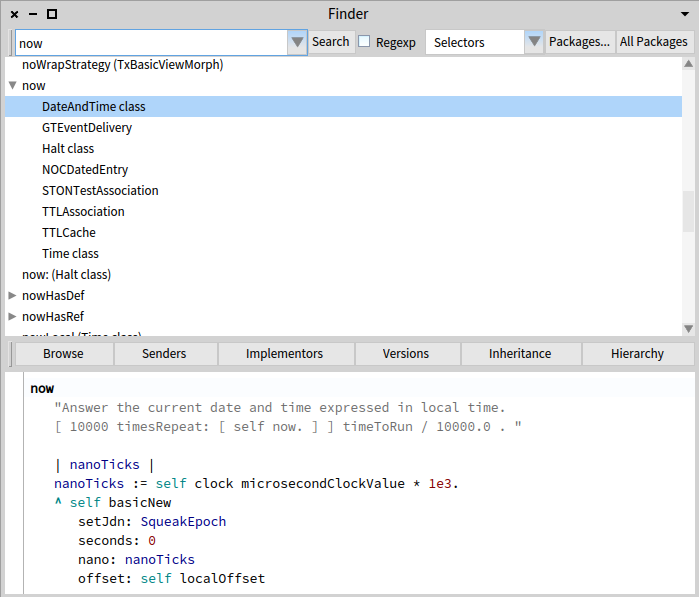
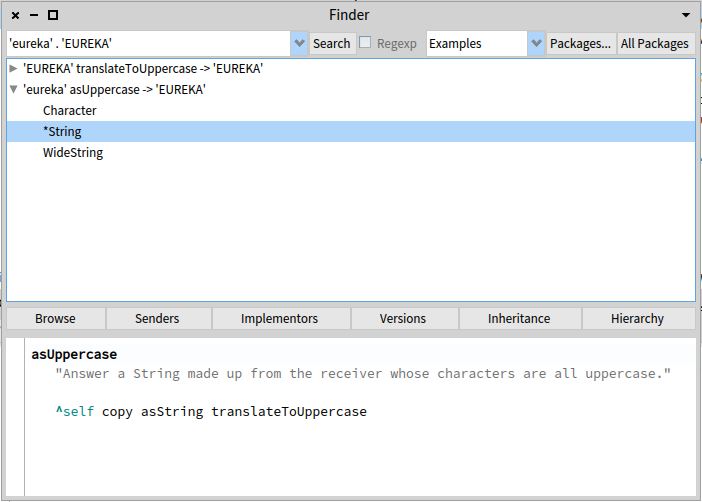

4 Finding information in Pharo
In this short chapter we will show you some ways to find information in Pharo.
4.1 Navigating using the System Browser
There are ways to get to the class or method you're looking for in Pharo fast - very fast indeed. Later on we'll introduce you to Spotter, one of the quickest ways to find an object in Pharo. But for now, while we're still learning, let's try taking the slow road by only using the System Browser to find the printString method defined in the class Object. At the end of the navigation, we will get the situation depicted in 3.8:
- Open the Browser: Either by using the World Menu or the shortcut
Cmd-O Cmd-B. When a new System Browser window first opens, all panes but the leftmost are empty. This first pane lists all known packages, which contain groups of related classes. - Filter packages: Type part of the name of the package in the leftmost filter. It filters the list of packages to be shown in the list above it. Type 'Kern' for example.
- Expand the
Kernelpackage and select theObjectselement: When we select a package, it causes the second pane to show a list of all of the classes in the selected package. You should see the class hierarchy ofProtoObject. - Select the
Objectclass: When a class is selected, the remaining two panes will be populated. The third pane displays the protocols of the currently selected class. These are convenient groupings of related methods which we'll discuss further later in the book. If no protocol is selected you should see all methods in the fourth pane. - Select the
printingprotocol: You may have to scroll down to find it -Objectis a pretty important class and has lots of protocols. You can also click on the third pane and typepr, to typeahead-find theprintingprotocol. Now select it, and in the fourth pane you will see only the methods related to printing. - Select the
printStringmethod: Now we see in the bottom pane the source code of theprintStringmethod, shared by all objects in the system (except those that override it).
There are much better way to find a method, for example, just type it in a Playground and select the word and use Implementors of it in the Code search context menu item, which you can bring up with an action-click, or just use the keyboard shortcut Cmd-M.
4.2 Finding classes
There are several ways to find a class in Pharo. The first, as we have just seen above, is to know (or guess) what package it is in, and to navigate to it using the Browser.
A second way is to send the browse message to an instance or the class itself, asking it to open a Browser on itself. Suppose we want to browse the class Point:
- Using the Message
browse: TypePoint browseinto a Playground and then Do it. A Browser will open on thePointclass. You can do the same with10@20(which is an instance of the classPoint). - Using
Cmd-B: There is also a keyboard shortcutCmd-Bthat you can use in any text pane; select the word and pressCmd-B. Use this keyboard shortcut to browse the classPoint.
Notice that, when the Point class is selected but no protocol or method is selected, instead of the source code of a method we see a class definition. This is nothing more than an ordinary message that is sent to the parent class, asking it to create a subclass. If you click on the Comments button at the bottom of the class pane, you can see the class comment in a dedicated pane.
In addition the system supports the following mouse shortcuts:
Cmd-Clickon a word (Alt-Right clickon Windows and Linux): open the definition of a class when the word is a class name. You get also the implementors of the message when you click on a selector that is in the body of a method.Shift-Cmd-Clickon a word (Shift-Alt-Right clickon Windows and Linux): open a list browser with all the references of the class when the word is a class name. You get also the senders of the message when you click on a selector that is in the body of a method.
Using Spotter
The fastest (and probably the coolest) way to find a class is to use Spotter. Pressing Shift-Enter opens Spotter, a very powerful tool for finding classes, methods, and many other related actions. Figure 4.1 shows Spotter being used to look for Point.
Shift-Enter to browse the class Point.
Spotter offers several possibilities as shown in Figure 4.1. You can specify to Spotter the kind of category you are interested in. For example, using #Classes followed by the word you match against for, indicates that you are interested in classes.
Figure 4.2 shows how we can ask Spotter to show all the implementors of a given message. We do not have to type the full category name. Other categories are
#Menu, matching entries from the World Menu#Packages, matching packages in the system#Implementors, the implementors of a matching method#Senders, the senders of matching messages#Help, matching documents in Pharo's help system
You can also just type the beginning of the category to identify it, i.e. #sen printOn: will give all the senders of the message printOn:.
printString.
By default, Spotter shows matches from multiple categories, all grouped together under their category heading. You can navigate through each category to see more results.
Using 'Find class' in the System Browser
In the System Browser you can also search for a class by its name. For example, suppose that you are looking for some unknown class that represents dates and times.
In the System Browser, click anywhere in the package pane or the class pane, and launch the Class Search window by typing Cmd-F, or selecting Find class from the right-click context menu. Type time in the dialog box. A list of classes is displayed, whose names contain the substring time. Choose one (say, Time), and click OK (or press Enter), and the Browser will show it.
4.3 Finding methods
Sometimes you can guess the name of a method, or at least part of the name of a method, more easily than the name of a class. For example, if you are interested in the current time, you might expect that there would be a method called now, or at least one containing "now" as a substring. But where might it be? Spotter and Finder can help you!
With Spotter
As we've already said, Spotter can also find methods. You can use the #Implementors category to search for methods - just type #Implementors aMethodName. It will display all the methods that are implemented and have a similar or the same name. For instance, you will see all the methods starting with "now" if you type #imp now.
With Finder
Open the Finder, either through the Browse menu on the menu bar, or through the World Menu. Type now in the top left search box, click Search (or just press the Enter key). You should see a list of results similar to the one in Figure 4.3.

The Finder will display a list of all the method names that contain the substring "now". To scroll to now itself, move the cursor to the list and type "n"; this type-ahead trick works in all scrolling windows. Expanding the "now" item shows you the classes that implement a method with this name. Selecting any one of them will display the source code for the implementation in the code pane on the bottom. It is also possible to search for the exact match, by typing "now" in the top left search bar; by using quotes you will only get the exact match.
4.4 Finding Methods using Examples
Using the Finder you can look for classes or methods based on their names as mentioned above. You can also look for a string inside the whole method bodies, comments included.
But the Finder also offers a unique and powerful facility. At times you may have an inkling that a method exists, but have no idea what it might be called; you know how it should behave, but you don't know what it's called. But the Finder can still help! Suppose that you want to find a method that up-cases a string (for example, transforming 'eureka' into 'EUREKA'). We can give Finder the inputs and expected outputs of a method and it will (try to) find it for you.
'eureka' returns the string 'EUREKA'.
In the Finder, select the Examples mode using the second drop-down box (the one that shows Selectors by default).
Type 'eureka' . 'EUREKA' into the search box and press the Enter key or click the Search button (don't forget the single quotes!).
The Finder will then suggest a method that does what you were looking for, as well as display a list of classes that implement methods with the same name. In this case, it determined that the asUppercase method is the one that performed the operation that fit your example as shown in Figure 4.4.
Click on the 'eureka' asUppercase -> 'EUREKA' line, to show the list of classes that implement the method asUppercase.
An asterisk at the beginning of a line in the list of classes indicates that this method is the one that was actually used to obtain the desired result. So the asterisk in front of String lets us know that the method asUppercase defined in the class String was executed and returned the result we wanted. The classes that do not have an asterisk are just the other implementors of asUppercase, which share the method name but did not return the result you wanted. So the method asUppercase defined in Character was not executed in our example, because 'eureka' is not a Character instance (it's a String).
You can also use the Finder to search for methods with one or more arguments. For example, if you are looking for a method that will find the greatest common factor of two integers, you might try 25 . 35 . 5. You can also give Finder multiple examples to narrow the search space; the help text in the bottom pane explains how.
4.5 Conclusion
- The Spotter is a powerful tool to navigate the system and find information.
- The Finder allows you to look for classes, methods and more. In addition it lets you find methods based on the object receiving the message, the message arguments, and the returned object.